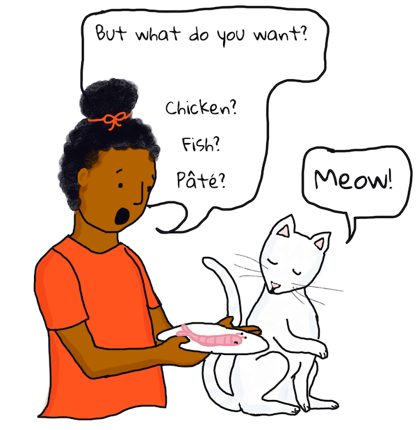

自然语言处理介绍⚓︎
这节课讲解了 自然语言处理 的简要历史和重要概念，自然语言处理是计算语言学的一个子领域。
课前测验⚓︎
介绍⚓︎
众所周知，自然语言处理（Natural Language Processing, NLP）是机器学习在生产软件中应用最广泛的领域之一。
✅ 你能想到哪些你日常生活中使用的软件可能嵌入了自然语言处理技术呢？或者，你经常使用的文字处理程序或移动应用程序中是否嵌入了自然语言处理技术呢？
你将会学习到：
- 什么是「语言」。语言的发展历程，以及相关研究的主要领域。
- 定义和概念。你还将了解关于计算机文本处理的概念。包括解析（parsing）、语法（grammar）以及识别名词与动词。这节课中有一些编程任务；还有一些重要概念将在以后的课程中被引入，届时你也会练习通过编程实现其它概念。
计算语言学⚓︎
计算语言学 (Computational Linguistics) 是一个经过几十年研究和发展的领域，它研究如何让计算机能使用、理解、翻译语言并使用语言交流。自然语言处理（NLP）是计算语言学中一个专注于计算机如何处理「自然的」（或者说，人类的）语言的相关领域。
举例：电话号码识别⚓︎
如果你曾经在手机上使用语音输入替代键盘输入，或者使用过虚拟语音助手，那么你的语音将被转录（或者叫解析）为文本形式后进行处理。被检测到的关键字最后将被处理成手机或语音助手可以理解并可以依此做出行为的格式。

真正意义上的语言理解很难！图源：Jen Looper
这项技术是如何实现的？⚓︎
我们之所以可能完成这样的任务，是因为有人编写了一个计算机程序来实现它。几十年前，一些科幻作家预测，在未来，人类很大可能会能够他们的电脑对话，而电脑总是能准确地理解人类的意思。可惜的是，事实证明这个问题的解决比我们想象的更困难。虽然今天这个问题已经被初步解决，但在理解句子的含义时，要实现 “完美” 的自然语言处理仍然存在重大挑战 —— 理解幽默或是检测感情（比如讽刺）对于计算机来说尤其困难。
现在，你可能会想起课堂上老师讲解的语法。在某些国家/地区，语法和语言学知识是学生的专题课内容。但在另一些国家/地区，不管是从小学习的第一语言（学习阅读和写作），还是之后学习的第二语言中，语法及语言学知识都是作为语言的一部分教学的。所以，如果你不能很好地区分名词与动词或者区分副词与形容词，请不要担心！
你还为难以区分一般现在时与现在进行时而烦恼吗？没关系的，即使是对以这门语言为母语的人在内的大多数人来说，区分它们都很有挑战性。但是，计算机非常善于应用标准的规则，你将学会编写可以像人一样“解析”句子的代码。稍后你将面对的更大挑战是理解句子的语义和情绪。
前提⚓︎
本节教程的主要先决条件是能够阅读和理解本节教程的语言。本节中没有数学问题或方程需要解决。虽然原作者用英文写了这教程，但它也被翻译成其他语言，所以你可能在阅读翻译内容。这节课的示例中涉及到很多语言种类（以比较不同语言的不同语法规则）。这些是未翻译的，但对它们的解释是翻译过的，所以你应该能理解它在讲什么。
编程任务中，你将会使用 Python 语言，示例使用的是 Python 3.8 版本。
在本节中你将需要并使用如下技能：
- Python 3。你需要能够理解并使用 Python 3. 本课将会使用输入、循环、文件读取、数组功能。
- Visual Studio Code + 扩展。 我们将使用 Visual Studio Code 及其 Python 扩展。你也可以使用你喜欢的 Python IDE。
- TextBlob。TextBlob 是一个精简的 Python 文本处理库。请按照 TextBlob 网站上的说明，在您的系统上安装它（也需要安装语料库，安装代码如下所示）：
pip install -U textblob python -m textblob.download_corpora
💡 提示：你可以在 VS Code 环境中直接运行 Python。 点击 文档 查看更多信息。
与机器对话⚓︎
试图让计算机理解人类语言的尝试最早可以追溯到几十年前。Alan Turing 是最早研究自然语言处理问题的科学家之一。
图灵测试⚓︎
当图灵在 1950 年代研究人工智能时，他想出了这个思维实验：让人类和计算机通过打字的方式来交谈，其中人类并不知道对方是人类还是计算机。
如果经过一定时间的交谈，人类无法确定对方是否是计算机，那么是否可以认为计算机正在“思考”？
灵感 - “模仿游戏”⚓︎
这个想法来自一个名为 模仿游戏 的派对游戏，其中一名审讯者独自一人在一个房间里，负责确定在另一个房间里的两人的性别（男性或女性）。审讯者可以传递笔记，并且需要想出能够揭示神秘人性别的问题。当然，另一个房间的玩家也可以通过回答问题的方式来欺骗审讯者，例如用看似真诚的方式误导或迷惑审讯者。
Eliza 的研发⚓︎
在 1960 年代的麻省理工学院，一位名叫 Joseph Weizenbaum 的科学家开发了 Eliza。Eliza 是一位计算机“治疗师”，它可以向人类提出问题并让人类觉得它能理解人类的回答。然而，虽然 Eliza 可以解析句子并识别某些语法结构和关键字以给出合理的答案，但不能说它理解了句子。如果 Eliza 看到的句子格式为“I am sad”（我很 难过），它可能会重新排列并替换句子中的单词，回答 “How long have you been sad"（你已经 难过 多久了）。
看起来像是 Eliza 理解了这句话，还在询问关于这句话的问题，而实际上，它只是在改变时态和添加词语。如果 Eliza 没有在回答中发现它知道如何响应的词汇，它会给出一个随机响应，该响应可以适用于许多不同的语句。 Eliza 很容易被欺骗，例如，如果用户写了 "You are a bicycle"（你是 个 自行车），它可能会回复 "How long have I been a bicycle?"（我已经是 一个 自行车 多久了?），而不是更合理的回答。

🎥 点击上方的图片查看关于 Eliza 原型的视频
旁注：如果你拥有 ACM 账户，你可以阅读 1996 年发表的 Eliza 的原始介绍。或者，在维基百科上阅读有关 Eliza 的信息。
练习 - 编程实现一个基础的对话机器人⚓︎
像 Eliza 一样的对话机器人是一个看起来可以智能地理解和响应用户输入的程序。与 Eliza 不同的是，我们的机器人不会用规则让它看起来像是在进行智能对话。我们的对话机器人将只有一种能力：它只会通过基本上可以糊弄所有普通对话的句子来随机回答，使得谈话能够继续进行。
计划⚓︎
搭建聊天机器人的步骤
- 打印用户与机器人交互的使用说明
- 开启循环
- 获取用户输入
- 如果用户要求退出，就退出
- 处理用户输入并选择一个回答（在这个例子中，从回答列表中随机选择一个回答）
- 打印回答
- 重复步骤 2
构建聊天机器人⚓︎
接下来让我们建一个聊天机器人。我们将从定义一些短语开始。
-
使用以下随机的回复（
random_responses）在 Python 中自己创建此机器人：random_responses = ["That is quite interesting, please tell me more.", "I see. Do go on.", "Why do you say that?", "Funny weather we've been having, isn't it?", "Let's change the subject.", "Did you catch the game last night?"]程序运行看起来应该是这样：（用户输入位于以
>开头的行上）Hello, I am Marvin, the simple robot. You can end this conversation at any time by typing 'bye' After typing each answer, press 'enter' How are you today? > I am good thanks That is quite interesting, please tell me more. > today I went for a walk Did you catch the game last night? > I did, but my team lost Funny weather we've been having, isn't it? > yes but I hope next week is better Let's change the subject. > ok, lets talk about music Why do you say that? > because I like music! Why do you say that? > bye It was nice talking to you, goodbye!示例程序在这里。这只是一种可能的解决方案。
✅ 停下来，思考一下
- 你认为这些随机响应能够“欺骗”人类，使人类认为机器人实际上理解了他们的意思吗？
- 机器人需要哪些功能才能更有效的回应？
- 如果机器人真的可以“理解”一个句子的意思，它是否也需要“记住”前面句子的意思？
🚀挑战⚓︎
在上面的「停下来，思考一下」板块中选择一个问题，尝试编程实现它们，或使用伪代码在纸上编写解决方案。
在下一课中，您将了解解析自然语言和机器学习的许多其他方法。
课后测验⚓︎
复习与自学⚓︎
看看下面的参考资料作为进一步的参考阅读。
参考⚓︎
- Schubert, Lenhart, "Computational Linguistics", The Stanford Encyclopedia of Philosophy (Spring 2020 Edition), Edward N. Zalta (ed.), URL = https://plato.stanford.edu/archives/spr2020/entries/computational-linguistics/.
- Princeton University "About WordNet." WordNet. Princeton University. 2010.
任务⚓︎
创建日期: November 22, 2023